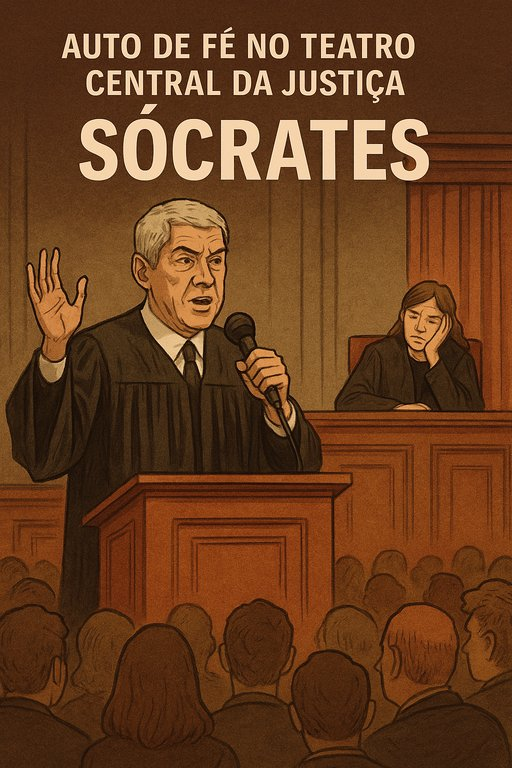

Publicado em 2025-07-08 17:46:30
Lisboa, 8 de julho.
Chovia arrogância sobre o tribunal.
O chão rangia com os passos do palhaço-mor do reino, agora auto-advogado, filósofo de ocasião e mártir em missão pública.
José Sócrates entrou em cena como quem vem salvar o país de si mesmo —
e o país... nem pestanejou.
Mal se sentou, começou o número:
“Isto tudo é uma perfídia total!” — gritou,
“Uma intrujice de dez anos!” — reiterou,
“Não há provas!” — assegurou,
“Sou inocente!” — berrou com a convicção de quem já escreveu o guião.
Sim, Sócrates defendeu-se sozinho.
Porque confiar em advogados seria demasiado vulgar —
e porque ninguém encena o delírio como ele mesmo.
A magistrada, digna como um piano desafinado,
tentava manter a pauta do processo.
Mas viu-se obrigada a dizer:
“Deixe de insinuar que tenho défice cognitivo.”
(E ali, por um segundo, o país inteiro ouviu o som agudo da dignidade a ser esbofeteada.)
Em vez de responder, Sócrates perguntou.
Em vez de explicar, teorizou.
Interrompeu o promotor, pediu para falar,
acusou a procuradoria de delírio técnico,
e ainda arranjou tempo para fazer pedagogia política.
“Delírio”, “perseguição”, “invenção” — palavras gastas de tanto uso.
Um dicionário inteiro ao serviço da negação — mas sem uma única linha de arrependimento.
Sócrates não quer ser julgado.
Quer ser lembrado.
Quer ser citado em rodapés, em painéis, em cafés.
E se for preso um dia — que seja preso em verso, como mártir de uma tragédia jurídica montada por pigmeus institucionais.
Nesta sessão de tribunal, a Justiça foi mais uma vez atriz secundária.
A toga virou adereço.
O processo, guião.
E o tribunal, plateia constrangida.
José Sócrates não se defendeu.
Interpretou-se.
Com arrogância barroca, com lirismo grotesco.
E num país a sério, teria sido calado pela verdade.
Mas aqui…
aplaudido pelo silêncio.
Francisco Gonçalves
Cronista da farsa permanente — onde os culpados fazem de inocentes e os juízes de espectadores.
: